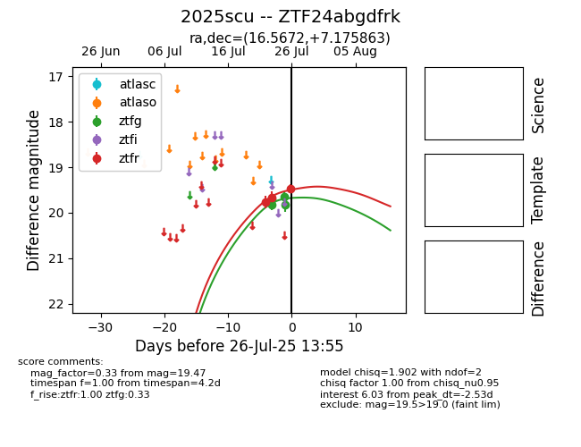

Target 2025scu at 2025-07-26 13:55, see:
FINK: fink-portal.org/2025scu
Lasair: lasair-ztf.lsst.ac.uk/objects/2025scu
ALeRCE: alerce.online/object/2025scu
TNS: wis-tns.org/object/2025scu
YSE: ziggy.ucolick.org/yse/transient_detail/2025scu
alt names
ZTF24abgdfrk (ztf,fink)
2025scu (tns,yse)
coordinates:
equatorial (ra, dec) = (16.5672,+7.17586)
galactic (l, b) = (129.4375,-55.50844)
photometry
last ztfg=19.83, ztfr=19.47
4 ztfg, 3 ztfr detections
